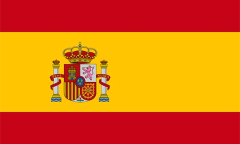

Inglês
Inglês é o idioma mais falado no mundo, tendo cerca de 898 milhões de pessoas falando inglês como segunda língua e sendo considerado língua oficial em gingantes como Estados
Unidos, Reino Unido e Canadá, além de ser a segunda língua mais pedida por empresas no Brasil.
Venha aprender inglês com aulas particulares e em grupo. Aqui você será capaz de se comunicar em inglês do básico ao avançado de forma clara e objetiva, com praticas orais, escrita e leitura.
Francês 
Francês é o quinto idioma mais falado no mundo, tendo quase 200 milhões de pessoas falando francês como segunda língua e sendo a língua oficial da cidade do amor: Paris, além de ser a língua
co-oficial de outros países como Canadá, Madagascar e Bélgica.
Venha aprender francês com aulas particulares e em grupo. Aqui você será capaz de se comunicar em francês do básico ao avançado de forma clara e objetiva, com praticas orais, escrita e leitura.
Italiano 
Italiano está no top 15 de segunda língua mais falado no mundo, tendo mais de 65 milhões de pessoas falando italiano e sendo junto com o latim a língua oficial da residência do Papa:
Vaticano, é também considerada uma língua romantica e a segunda mais próxima do latim.
Venha aprender italiano com aulas particulares e em grupo. Aqui você será capaz de se comunicar em italiano do básico ao avançado de forma clara e objetiva, com praticas orais, escrita e leitura.
Espanhol 
Espanhol é o quarto idioma mais falado no mundo, tendo quase 550 milhões de pessoas falando espanhol e sendo considerado língua oficial de muitos de nossos vizinhos como Argentina,
Chile, Bolívia, além do país europeu Espanha claro.
Venha aprender espanhol com aulas particulares e em grupo. Aqui você será capaz de se comunicar em espanhol do básico ao avançado de forma clara e objetiva, com praticas orais, escrita e leitura.
Alemão
Alemão é falado por cerca de 3 milhões de brasileiros, tendo grande influencia na região Sul do Brasil, mas é no Espirito Santo que é considerado patrimônio cultural, sem contar que
é a língua oficial em dois países famosos: Alemanha e Áustria, além de ser uma das línguas faladas na Suíça.
Venha aprender alemão com aulas particulares e em grupo. Aqui você será capaz de se comunicar em alemão do básico ao avançado de forma clara e objetiva, com praticas orais, escrita e leitura.